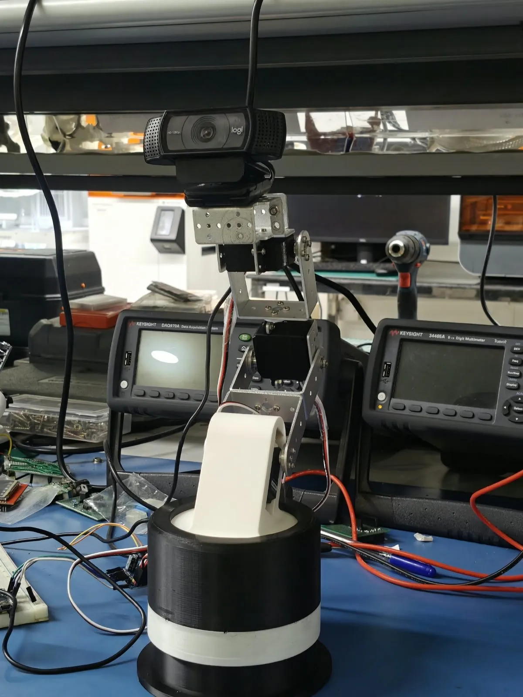
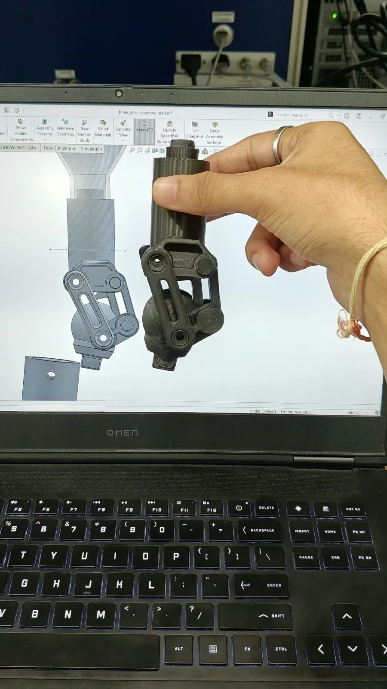
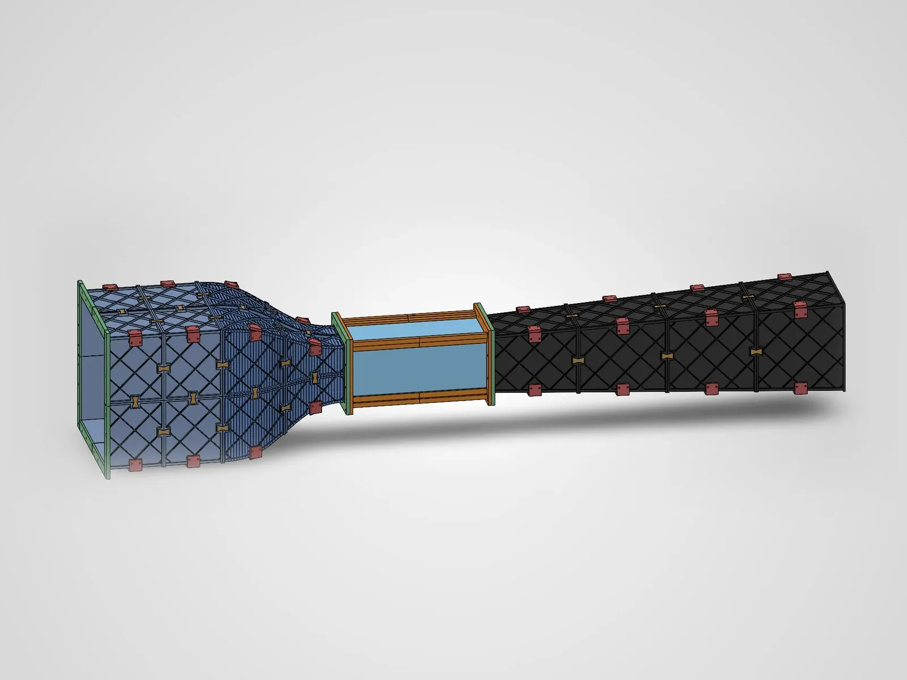
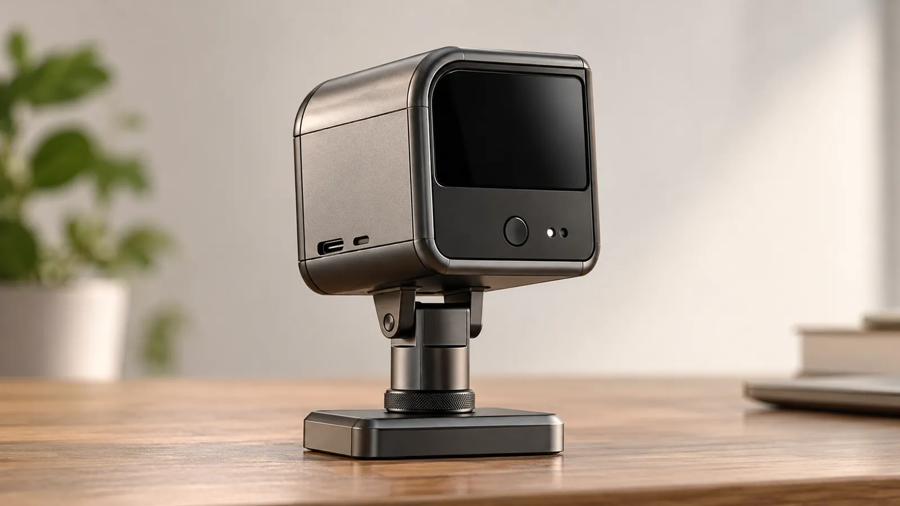
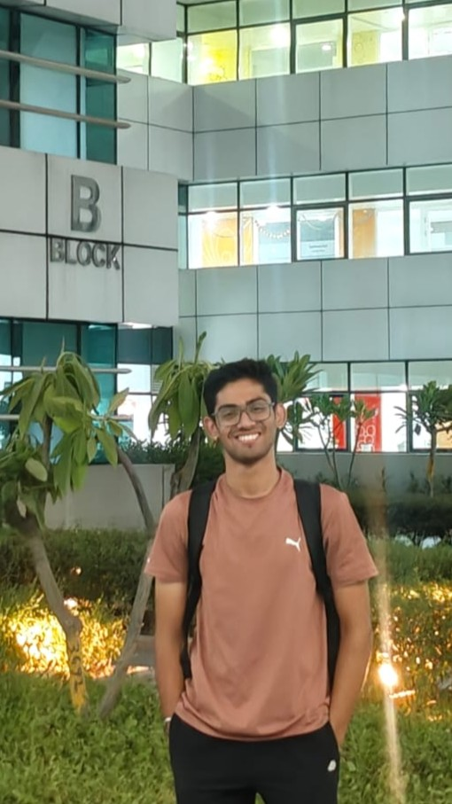

Pranjal SinghSesodia
I’m a mechanical engineering student at NSUT in New Delhi. Right now I’m at mPragati, IIT Delhi, building a surgical arm that uses cameras to work out where its own joints are, and checking implants and prosthetic knees for the motion they promise.
I like building a mechanism and then poking at it until I’m sure it works. Away from that, I’m usually at the piano or out with a camera.
- Now
- R&D intern, mPragati, IIT Delhi
- Before
- Research intern, QuEST Lab, IIT Delhi
- Studying
- B.Tech. Mechanical Engineering, NSUT, 2024–28
- Published
- First-author review, Next Research (Elsevier), 2026
- Looking for
- Research internships and lab work
This page is a piano roll. Its keys run down the left edge: click one, or click the paper to punch a note. Scrolling plays it.
Work
-

A surgical arm that finds its own joints with cameras
Two camera feedback loops for a 6-DOF arm whose servos can’t say where they are. mPragati, IIT Delhi.
-

Checking a patented elbow implant, and freeing a knee that jammed
Multi-body dynamics showed a patented hinge moving differently from its intended path; re-sized links freed a locked four-bar knee.
-

Robust real-time levitation gap estimation for hyperloop pods
A first-author review of gap sensing and state estimation for maglev, in Next Research (Elsevier).
-

A tabletop subsonic wind tunnel, designed end to end
Sizing, contraction CFD, structural FEA and electronics for a 6:1 tunnel, on a ₹10,000 university grant.
-

DeskMilo, a desk companion that turns to look at you
A Raspberry Pi assistant with a two-motor head. Three sketches, one mechanism.
-

Measuring how surgeons move, with two ordinary webcams
Pose estimation for live joint angles, and a calibrated stereo pair up to 95–96% accurate. QuEST Lab, IIT Delhi.
Smaller things
- 2025–26A catalytic converter for Team Daedalus Racing
Junior engineer on the BAJA SAEINDIA team. Developed the converter with lower-cost catalyst materials and analysed its manufacturing emissions and sustainability in Ansys Granta Selector. Part of the entry that won 1st nationally (₹30,000) at the mBAJA 2026 Sustainability Event.
- 2026Saline management for minimally invasive surgery
Co-developed a pump and lining system for managing saline during minimally invasive surgery, in a team of four at QuEST Lab.
- 2024–25Drinking straws from stubble
A research poster on turning wheat-straw waste into biodegradable straws, at the NSUT Research Conclave.
- 2024–26Teaching, mentoring and running things
Taught 60 students in a two-day, hands-on 3D-printing workshop at the NSUT Innovation and Incubation Foundation (September 2026). Guided eight students to a working Li-ion battery upcycling prototype in three weeks at Change.Maker 2.0, Design Department, IIT Delhi (2025). Founded Team Daedalus’s Piston Cup Challenge and organised events at three college fests, 250+ participants each.
- 2022EYEAR, speech to sign language
A real-time speech-to-sign device on a Raspberry Pi, built at school. Indian provisional patent; top 350 nationally in the ATL Marathon; Smart India Hackathon Junior finalist; shown to the Union Minister of Education at the IBM Under-18 Internship showcase.
- 2022A quadruped in fourteen days
One of 25 school students chosen nationally for Change.Makers at IIT Delhi; led the build of a servo-driven quadruped: mechanism, actuation, gait.
- Now and thenPrinted because I wanted to see them
A peristaltic pump rotor, a small walking robot, and plenty of resin.
Photographs
Mostly on a phone, sometimes a Canon EOS 1300D: low light, old stone, streets, birds on walls.
Fourteen photographs, 2026.Point at one for its exposure; click to see it large.
More on Instagram.
About
I’m in my third year of mechanical engineering at NSUT, New Delhi. I’m most interested in mechanisms that work with the human body: surgical tools, implants, prosthetics.
I like to sketch several options before choosing one, and to test designs in simulation before building them.
I also play the piano and take photographs.

- Studying
- B.Tech. Mechanical Engineering, NSUT, 2024–28. CGPA 8.07, 19th of 198 in the department.
- Coursework
- Thermodynamics, Theory of Machines, Solid Mechanics, Control Systems, Fluid Mechanics, Numerical Methods. This term: Robotics, Machine Design.
- Tools
- SolidWorks; ANSYS Fluent, FEA and multi-body dynamics; Ansys Granta Selector; MuJoCo and ROS 2; PID control, computer vision, pose estimation, stereo calibration, depth estimation; Python (OpenCV, NumPy), MATLAB, C; Raspberry Pi, ESP32, Arduino; linkage synthesis, tolerancing, DFM; FDM and SLA printing.
- Drawn to
- Simulation for robotics; heat in actuators and grippers; gripper dynamics (contact, compliance, slip); surgical and rehabilitation devices.
- Reading
- For a literature review on heat in robotic actuators and grippers.
- School
- Army Public School, Shankar Vihar, New Delhi: CBSE Class XII (PCM) 90%, Class X 90%.